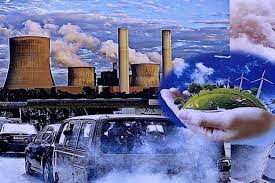
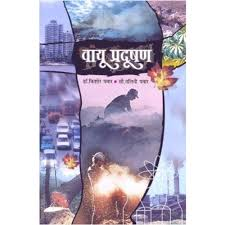

वायू प्रदूषण
Subject-wise Description of India (Bharat)
वायू प्रदूषण:..
 हा जगभरातील एक महत्त्वाचा चिंतेचा विषय आहे. धोकादायक कण, वायू आणि रसायने हवेत सोडल्यास वायू प्रदूषण होते. हवेतील प्रदूषक वाहने, कारखाने, वीज प्रकल्प आणि बांधकाम साइट्समध्ये आढळू शकतात. वायू प्रदूषणामुळे धुके देखील होते, ज्यामुळे श्वास घेणे कठीण होते किंवा 100 फूट जवळच्या वस्तू देखील दिसतात.
शहरी भागात वाहनांचा भरपूर प्रमाणात वापर होतो आणि या वाहनांच्या सर्जनामुळे शहरी भागाचे वायू प्रदूषण हे दिवसेंदिवस बिघडत चालले आहे. वाहनांचे उत्सर्जन हे शहरी भागातील वायू प्रदूषणाचे प्रमुख स्त्रोत आहेत. कार, ट्रक, बस, मोटारसायकल आणि विमाने कार्बन मोनॉक्साईड (CO), नायट्रोजन ऑक्साइड (NOx), वाष्पशील सेंद्रिय संयुगे (VOCs) आणि पार्टिक्युलेट मॅटर (PM) यांसारखी प्रदूषके सोडतात.
मोठमोठ्या कंपन्या ज्या काही औद्योगिक प्रक्रिया करून वस्तू बनवतात आणि ह्या वस्तू बनवत असताना हवेमार्फत जे प्रदूषके सोडतात यामुळे हवेमध्ये त्याचे दूषित घटक पसरून संपूर्ण हवा दूषित करतात. औद्योगिक प्रक्रिया, ज्यामध्ये उत्पादन, ऊर्जा उत्पादन आणि बांधकाम समाविष्ट आहे, विविध प्रदूषक हवेत सोडतात. या प्रदूषकांमध्ये सल्फर डायऑक्साइड (SO2), नायट्रोजन ऑक्साईड (NOx), कार्बन मोनोऑक्साइड (CO), पार्टिक्युलेट मॅटर (PM), आणि अस्थिर सेंद्रिय संयुगे (VOCs) यांचा समावेश असू शकतो.